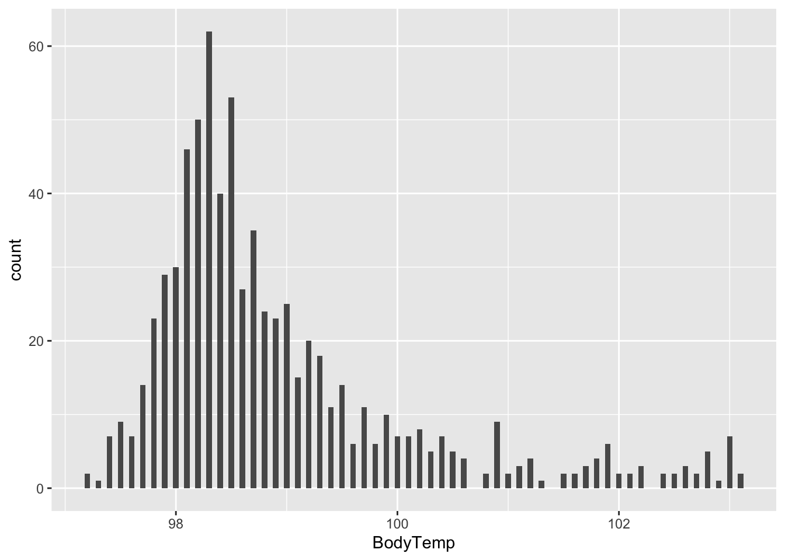

data_location <- here::here("files", "processed_data", "processeddata.rds")
d1 <- readRDS(data_location)#Nausea
## No Yes
## 475 255#plotting Nause count
#Bodytemp
## Min. 1st Qu. Median Mean 3rd Qu. Max.
## 97.20 98.20 98.50 98.94 99.30 103.10#plotting body tmep count
 #plotting y~x, y= bodytemp, x=nausea
#how body temp and nasal congestation relates
plot4 <- ggplot(data = d1) +
geom_boxplot(mapping = aes(x = reorder(NasalCongestion,BodyTemp, FUN = median), y = BodyTemp)) +
coord_flip()
plot4#how weakness and body temp relates
plot5 <- ggplot(data = d1) +
geom_boxplot(mapping = aes(x = reorder(Weakness,BodyTemp, FUN = median), y = BodyTemp)) +
coord_flip()
plot5#alternatively,
## Fatigue Nausea n
## 1 No No 51
## 2 No Yes 13
## 3 Yes No 424
## 4 Yes Yes 242#also, this can be done for more visualization
fat_nau <- d1 %>%
count(Fatigue, Nausea) %>%
ggplot(mapping = aes(x = Fatigue, y = Nausea)) +
geom_tile(mapping = aes(fill = n))
fat_nau#runny nose stat
##
## No Yes
## 211 519